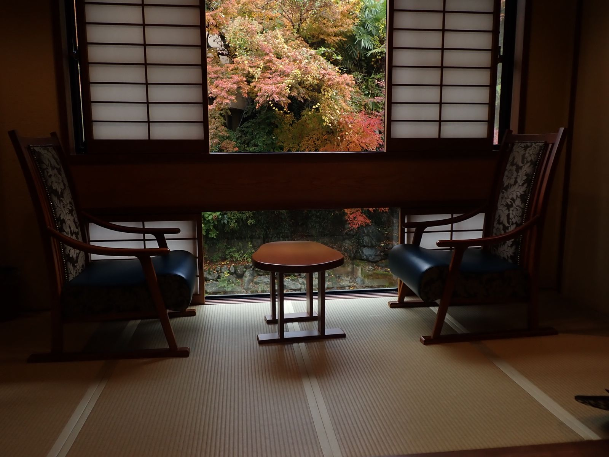

空室状況Vacancy
※ 空室状況は毎日更新していますが、最新の状況と異なる場合がございます。ご予約はお電話を優先して承っておりますので、お電話にてご確認ください。
※ このページの空室データはサンプルです。
- ○空室あり
- △残りわずか
- ×満室
- ☎お電話でお問い合わせください
- 休休館日
| 日 | 月 | 火 | 水 | 木 | 金 | 土 |
|---|

※ 空室状況は毎日更新していますが、最新の状況と異なる場合がございます。ご予約はお電話を優先して承っておりますので、お電話にてご確認ください。
※ このページの空室データはサンプルです。
| 日 | 月 | 火 | 水 | 木 | 金 | 土 |
|---|